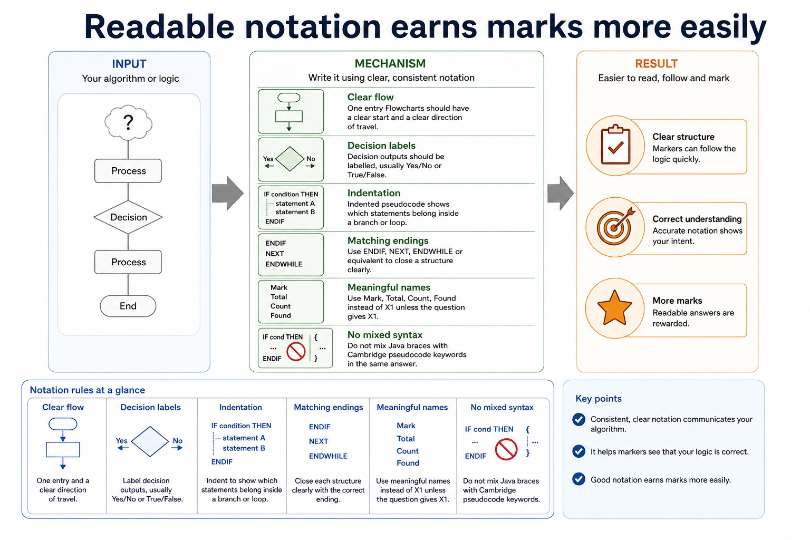

Cambridge AS9618 | Paper 2 | Section 9: Algorithm design and problem-solving
Structured English, flowcharts and pseudocode
Flexible-depth lesson
Structured English, flowcharts and pseudocode
S9.07 | Select what to omit, teach briefly or explore in depth.
Quickdiagnose + essentials
Fullcomplete explanation
Deepprerequisites + extension
Choosepractice by need
Teacher choice
Choose the depth for this group
Quick route
Use the diagnostic, learning objectives, first worked example and foundation question. Stop once the learner can explain the central distinction accurately.
Full route
Teach every core explanation point, the worked example and all lesson questions. Use the visual only when it adds a different representation.
Deep route
Add the prerequisite refresher, ask learners to connect the concept checklist, discuss the labelled extension and complete a transfer question without a model answer.
Part 1 | optional depth
Prerequisite knowledge and quick diagnostic
Recall S9.03, S9.06 before starting this lesson.
Give one accurate definition or method step before continuing. If it is missing, revisit only that prerequisite.
Open optional prerequisite refresher
An algorithm is a solution to a problem expressed as a sequence of defined steps; the definition requires both the problem-solving purpose and the defined sequence.
Understand what an algorithm is.
The three basic algorithm constructs are sequence, selection and iteration (repetition); students must recognise and use each construct, including combinations of constructs.
Understand and use sequence, selection and iteration.
Part 2 | deliberately over-complete
Knowledge explanation
Learning objectives
Use structured English, flowcharts and pseudocode; convert between representations.
Open the concept checklist and choose what to teach
structured
English
flowcharts
pseudocode
convert
Detailed explanation
Teach all points, or select only the ones this group needs. The list is intentionally fuller than a fixed lesson slot.
Document an algorithm using structured English, a flowchart or pseudocode; write pseudocode from structured English or a flowchart, and draw a flowchart from structured English or pseudocode while preserving the same algorithm.
Structured English expresses sequence, selection and repetition using controlled natural-language statements and indentation. A flowchart uses standard symbols and arrows; pseudocode uses Cambridge constructs. All three must preserve the same decisions and loop boundaries.
Convert by identifying inputs, outputs, conditions and repeated actions before translating notation. Do not translate shapes or sentences word for word while losing control flow.
Algorithm design review: define an algorithm as a solution expressed as a sequence of defined steps; use abstraction to retain essential details in an abstract model; use decomposition to express the problem as connected modules; and choose meaningful identifiers recorded in an identifier table.
Solution review: design with input-process-output, use sequence, selection and iteration, document the same algorithm in structured English, a flowchart or pseudocode, and convert between the specified representations without changing its control flow.
Worked example
Validate a mark: Structured English: INPUT Mark; WHILE Mark < 0 OR Mark 100, OUTPUT error and INPUT Mark; ENDWHILE. The flowchart returns from the invalid decision branch to input; pseudocode uses a pre-condition WHILE loop.

Readable notation earns marks more easily. One maintained explanation is shown as an image on larger screens and as text on small screens.
Notation rules
One entry Flowcharts should have a clear start and a clear direction of travel.
Decision labels Decision outputs should be labelled, usually Yes/No or True/False.
Indentation Indented pseudocode shows which statements belong inside a branch or loop.
Matching endings Use ENDIF, NEXT, ENDWHILE or equivalent to close a structure clearly.
Part 3 | select by learner need
Practice by question type
convertcalculatefoundation4 marks
Question 1. Convert this structured English to pseudocode: input Age; if Age is at least 18 output Adult, otherwise output Minor.
Show answer and marking guidance
Answer: INPUT Age; IF Age = 18 THEN; OUTPUT Adult and ELSE OUTPUT Minor; closes with ENDIF / coherent Cambridge syntax
Marking guidance: Do not accept two independent IF statements if they can produce contradictory paths; the description requires mutually exclusive alternatives.
Common error: For the command word convert, perform that exact action; do not replace it with an unrelated fact.
explainexplainapplication2 marks
Question 2. Why is indentation useful in structured English?
Show answer and marking guidance
Answer: It shows which steps belong inside a selection or loop.
Marking guidance: Award one mark for each distinct, technically accurate point or method step.
Common error: Do not repeat the same point in different words; each mark needs a separate idea or method step.
applyrecalltransfer2 marks
Question 3. Which flowchart symbol represents a decision?
Show answer and marking guidance
Answer: Diamond.
Marking guidance: Award one mark for each distinct, technically accurate point or method step.
Common error: Do not copy the worked example unchanged; transfer the method and check it against the new context.
Related past-paper indexes
Reference
Marks
Command word
Question type
9618/21/S/25 Q3
8
write
recall
9618/21/S/23 Q4(a)
4
draw
diagram
9618/21/S/23 Q4(ii)
2
describe
write
Index only: Cambridge question and mark-scheme wording is not reproduced on this public course page.
Part 4 | close when ready
Summary and exam reminders
Summary
Define structured english, flowcharts and pseudocode with the exact technical vocabulary expected by the syllabus.
Use the lesson method on a fresh context and show the intermediate decision, representation or calculation.
Match the shape of the answer to the command word and the available marks.
Check the final answer against the scenario instead of repeating a memorised sentence.
Common error to correct
Students often start coding before defining the output. Correction: an algorithm is easier to design when the required result is known first.
Exam technique
Follow the command word: state gives a fact; explain links a cause to a consequence; compare covers both sides.
Match the number of independent points or method steps to the available marks.
For structured english, flowcharts and pseudocode, use the exact technical term before applying it to the scenario.